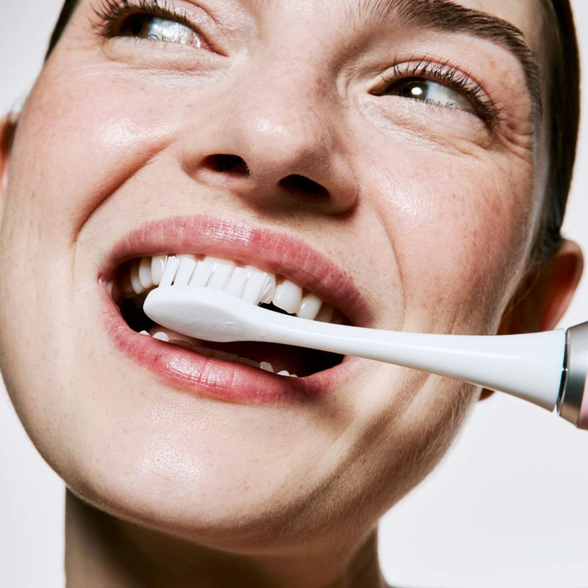
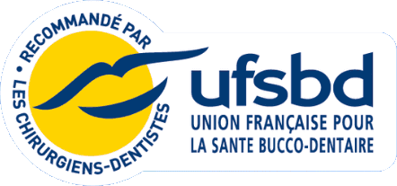
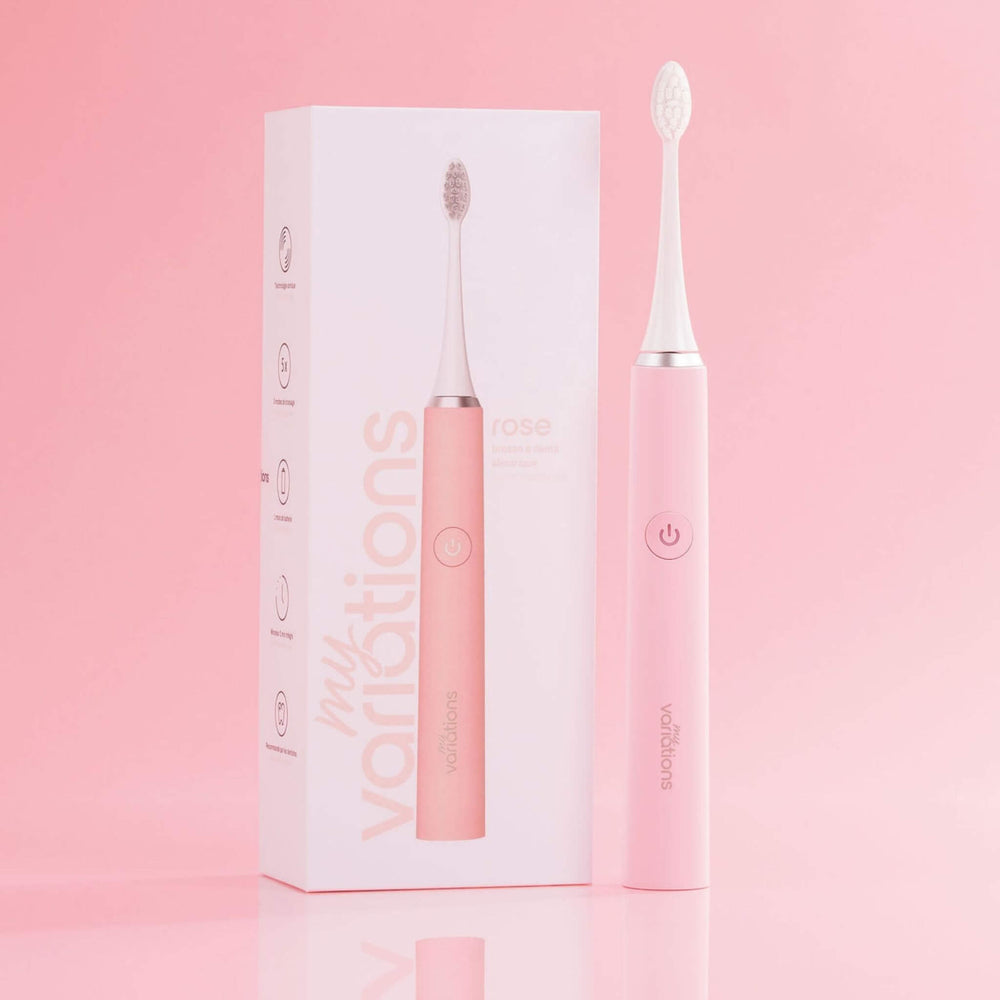
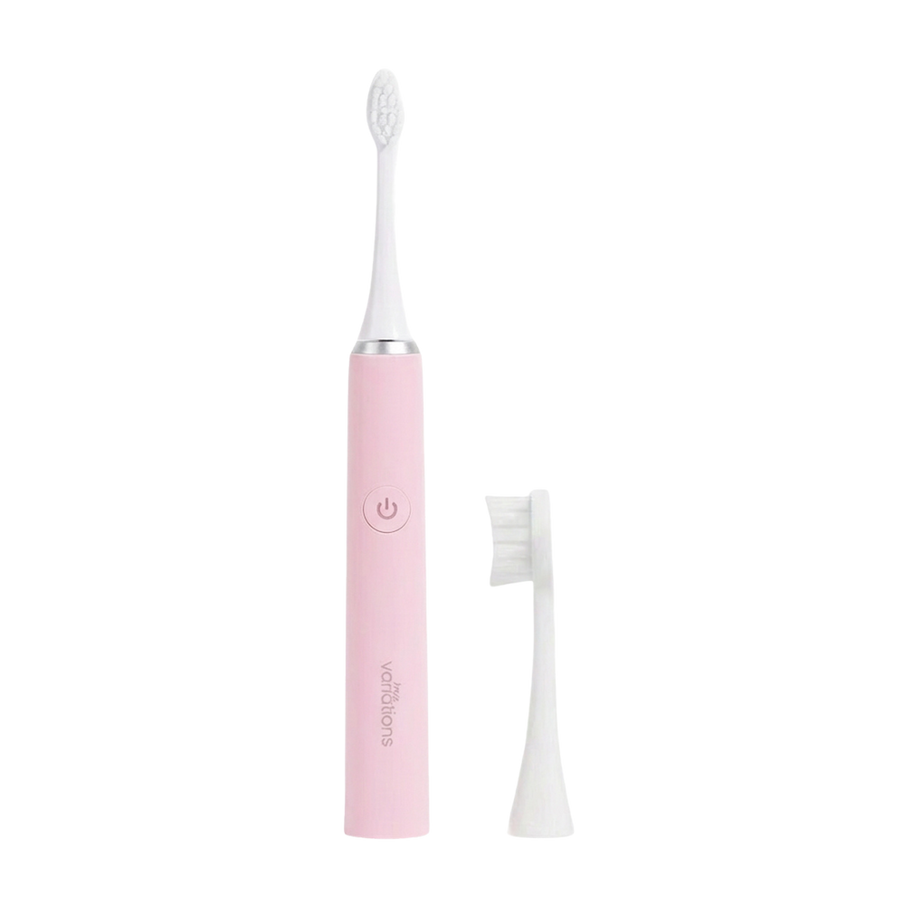
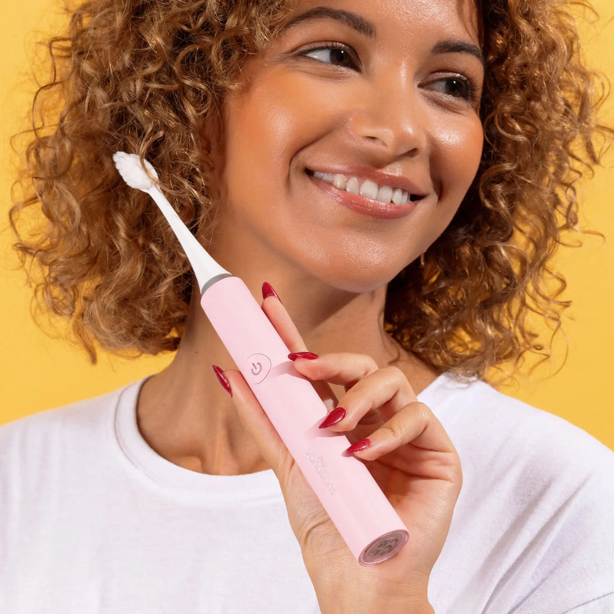
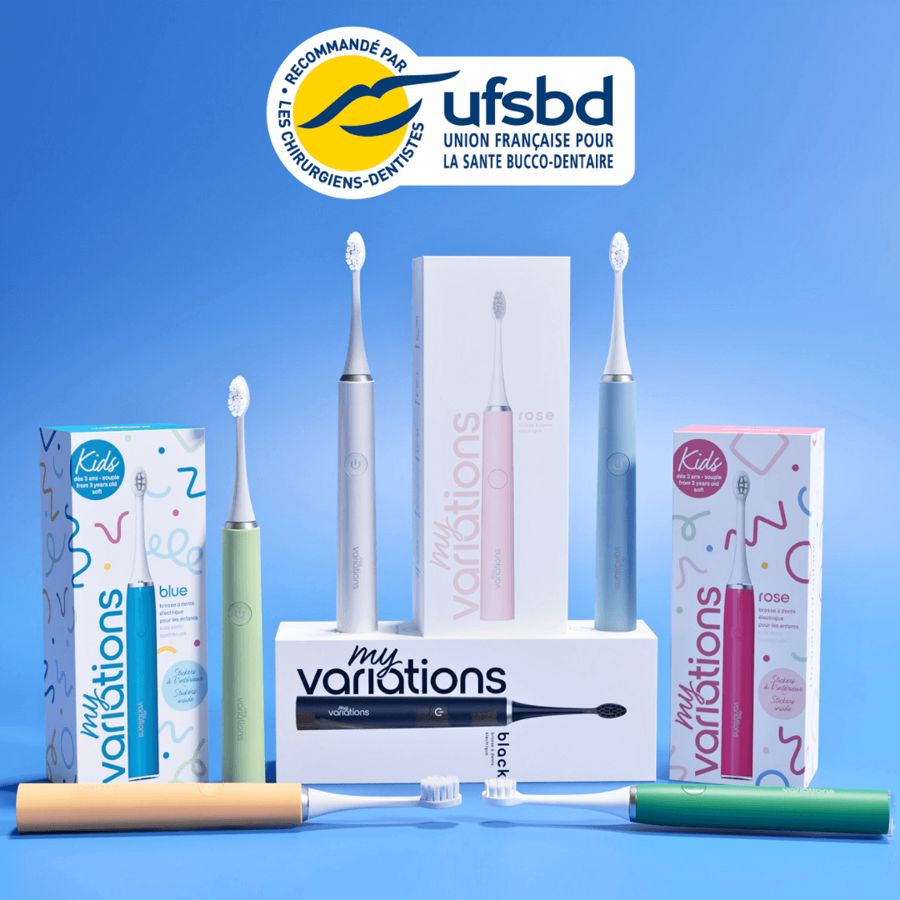

Brossage plus doux et efficace que la brosse à dents électriques que j'avais avant. […] Plus le câble de recharge qui traîne dans la salle de bain. Une seule recharge par mois et c'est fini !
Voici ce qu'ils conseillent, et pourquoi ça peut changer votre façon de vous brosser les dents.



Les dentistes donnent toujours les trois mêmes conseils. Le soir, devant le lavabo, on les oublie vite :
On s'arrête souvent avant.

Les dentistes et l'UFSBD déconseillent les brins médium ou durs : ils peuvent blesser la gencive et la faire saigner.

Avec une brosse manuelle, tout repose sur votre main : on appuie trop devant, pas assez au fond.
Le plus puissant, pour un nettoyage un peu plus vigoureux.
Dans la boîte : la brosse, une tête à poils souples, le câble de charge USB-C, le capuchon de protection.
Si elle ne vous convient pas, écrivez à hello@myvariations.com et on vous rembourse.

Un dentiste voit ce que votre miroir ne montre pas. Et ceux qui l'utilisent le confirment :
3 600 clients interrogés en novembre 2023. Voici ce qu'ils disent :
Jusqu'à 45 % de plaque en moinsqu'avec une brosse manuelle.
Ma dentiste m'a confirmée qu'elle était très étonnée du peu de tartre à retirer […]AAnne · avis client
4,7/5 sur 36 419 avis vérifiés. Quatre d'entre eux.
Brossage plus doux et efficace que la brosse à dents électriques que j'avais avant. […] Plus le câble de recharge qui traîne dans la salle de bain. Une seule recharge par mois et c'est fini !
Bientôt 2 ans que j'utilise une brosse à dent My Variations et je ne pourrais plus passer à autre chose. Plus jamais de saignements au brossage, plus de tartre non plus et des dents ultra propres et lisses.
Après de nombreux essais infructueux, j'ai enfin pu trouver la brosse à dent qui me convient, elle laisse les dents aussi douces qu'après un détartrage chez le dentiste.
J'avais un peu peur que toutes les promesses vues en ligne soient exagérées, mais finalement… pas du tout ! Après un mois d'utilisation, je vois vraiment la différence : mes dents sont beaucoup plus propres.
Plus d'un million de clients.
Si c'est une rotative, elle nettoie dent par dent avec une petite tête ronde. La sonique vibre à 40 000 micro-mouvements par minute et brasse l'eau jusqu'entre les dents, sans que vous ayez à appuyer. Les clients le disent : 91 % trouvent le brossage plus agréable et moins agressif qu'avec leur ancienne brosse. Et vous n'aurez plus de socle à nettoyer, la charge se fait en USB-C une fois par mois.
Ses 2 452 brins sont souples, et le mode Sensible réduit l'intensité. C'est ce que les dentistes conseillent : des brins souples, sans appuyer. Certains sentent un léger chatouillement les premiers jours, il passe vite. Si vos gencives saignent depuis longtemps, parlez-en à votre dentiste.
Avec l'abonnement, une tête neuve arrive tous les 1, 2 ou 3 mois, à 5,99 € livraison comprise. Vous recevez un e-mail 3 jours avant chaque envoi et vous pouvez décaler ou arrêter quand vous voulez. Sans abonnement, les têtes se vendent par 3 à 18 €.
Vous avez 30 jours après la réception pour l'essayer chez vous. Si elle ne vous convient pas, écrivez à hello@myvariations.com et on vous rembourse.
La brosse adulte convient dès 10 ans. Avant, la tête est un peu grande pour une petite bouche. Il existe une brosse MyVariations pour enfants, plus petite et plus douce.
Oui, dans plus de 6 000 pharmacies partenaires. Sur cette page, vous pouvez en plus prendre l'abonnement aux têtes, qui fait passer la brosse à 59,99 €.
Il manque un avis, le vôtre. Vous avez 30 jours pour vous le faire, chez vous.
Je choisis ma brosse Satisfait ou remboursé · Livré en 48 h